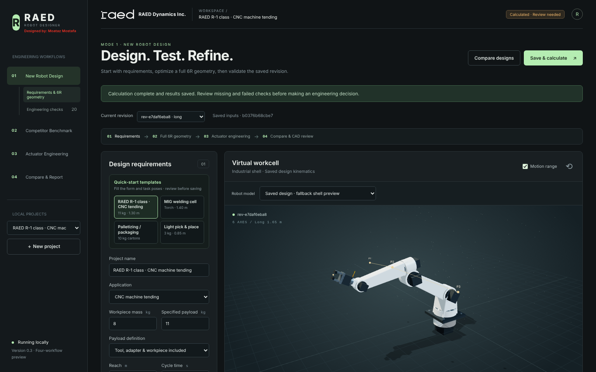
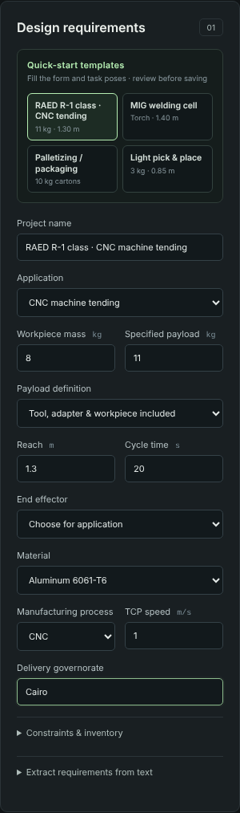
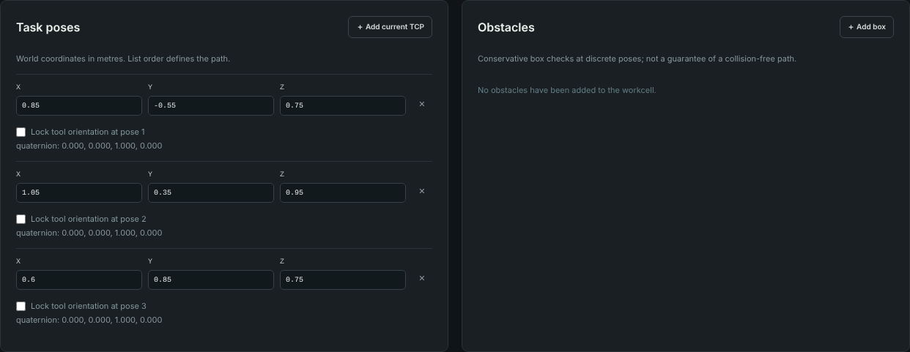
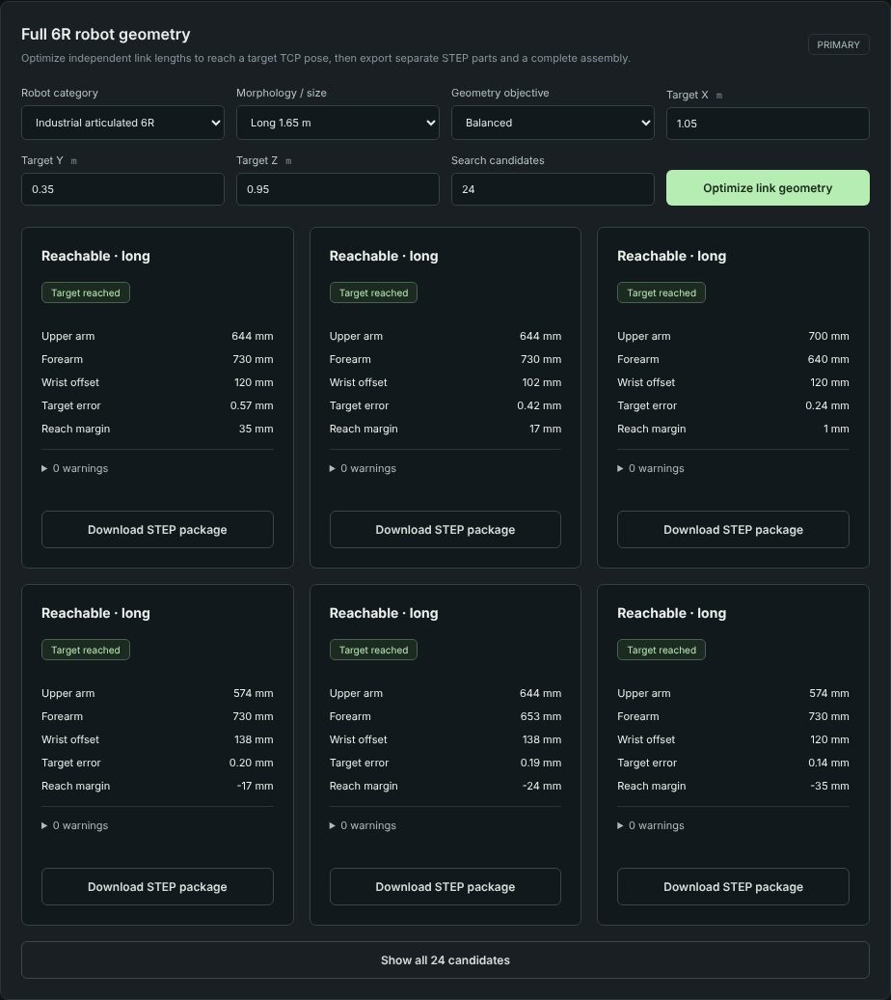
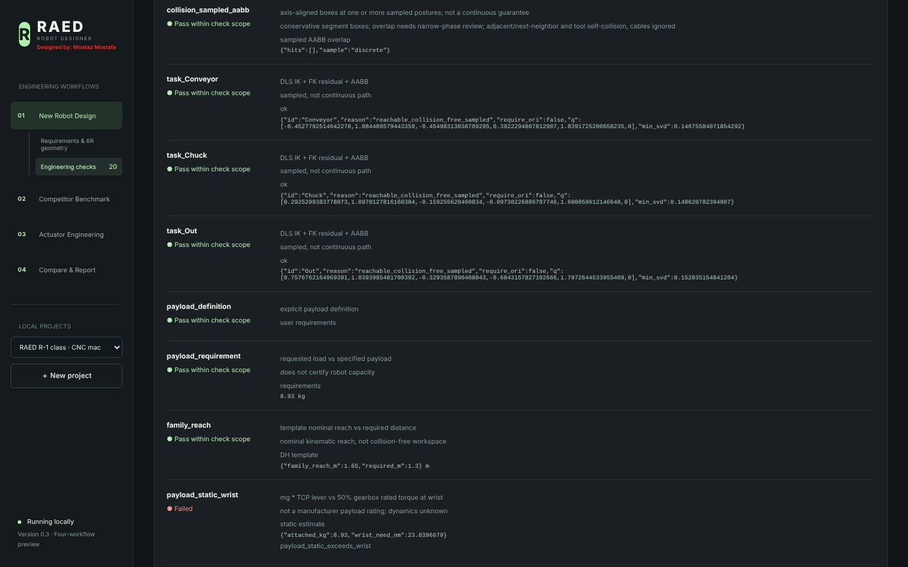
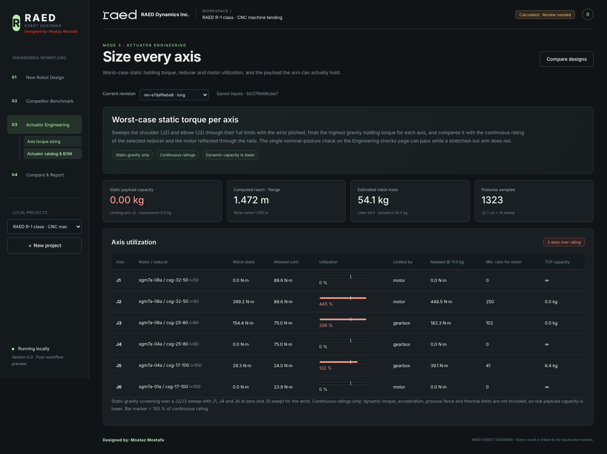
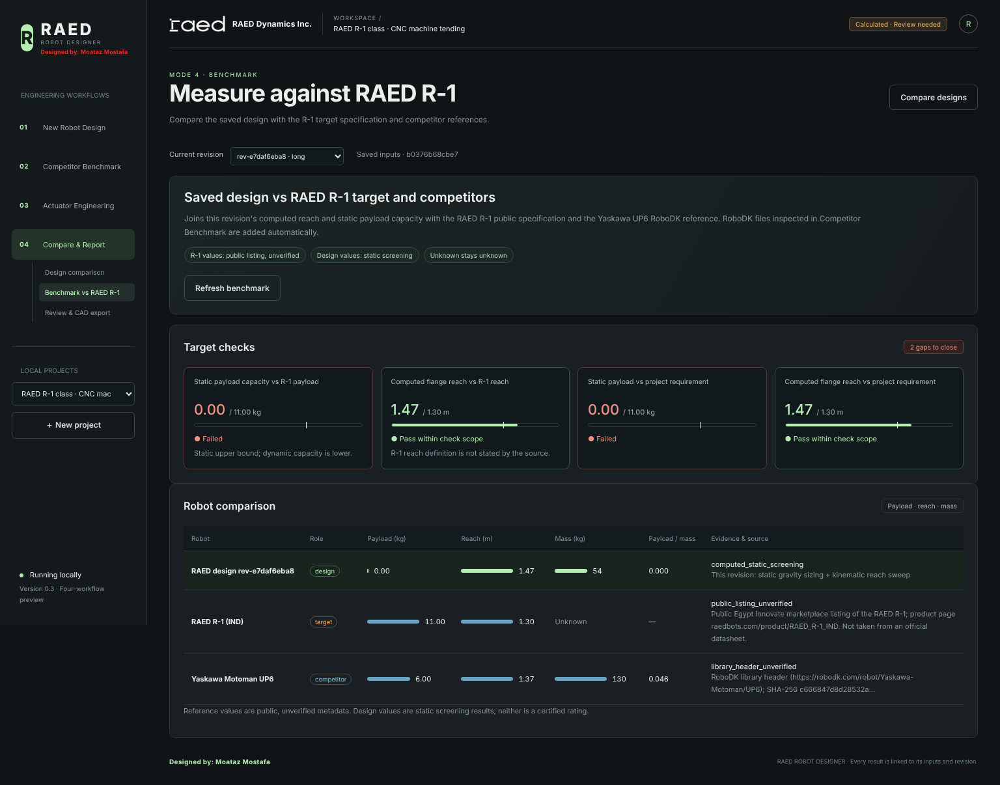
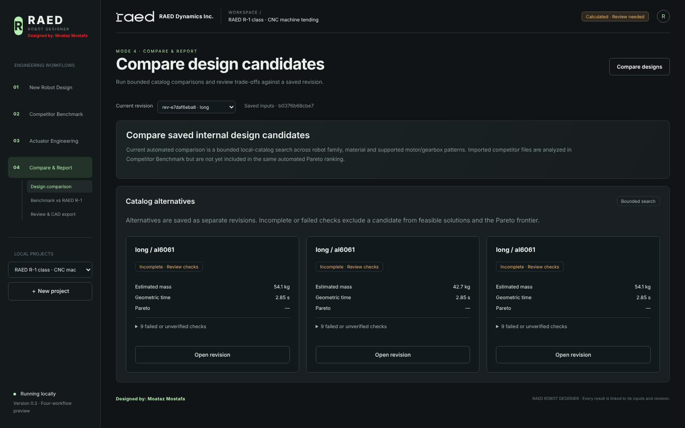
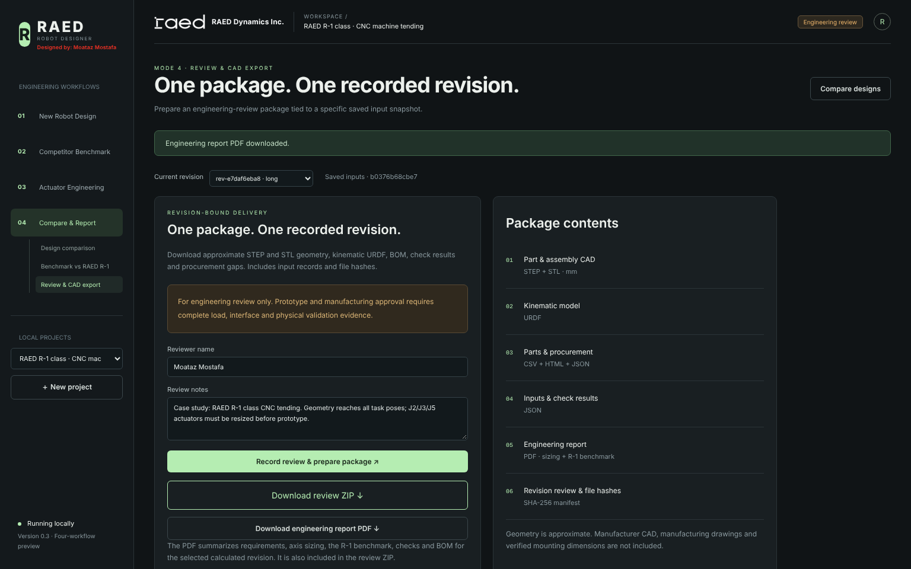

من المتطلبات إلى هندسة الذراع، تحجيم المحاور، المقارنة مع R-1 والمنافسين، ثم حزمة مراجعة CAD وتقرير هندسي — كل ذلك داخل البرنامج وبإصدار مُسجَّل واحد.

الهدف: التحقق — باستخدام البرنامج نفسه — من إمكانية تصميم ذراع صناعي سداسي المحاور يحقق المواصفات العامة المعلنة لروبوت RAED R-1 (حمولة 11 kg، مدى 1.30 m)، في تطبيق تغذية ماكينة CNC (سير ← ظرف الماكينة ← خروج)، مع تحديد الفجوات التي يجب إغلاقها قبل النموذج الأولي.
القرار: الهندسة صالحة للمرحلة التالية؛ يجب إعادة تحجيم مشغلات J2/J3/J5 وإضافة موازنة جاذبية (counterbalance) على J2 قبل اعتماد نموذج أولي. التفاصيل والتوصيات في الأقسام 5–7.
من بطاقة Quick-start templates (ميزة جديدة في v0.3) اخترنا RAED R-1 class · CNC tending. القالب يملأ النموذج ونقاط المهمة وهدف محسّن الهندسة دفعة واحدة، ثم تُراجع القيم قبل الحفظ.
| المتطلب | القيمة |
|---|---|
| التطبيق | CNC machine tending |
| كتلة القطعة / الحمولة المحددة | 8 kg / 11 kg |
| تعريف الحمولة | تشمل الأداة + المهايئ + القطعة |
| المدى المطلوب | 1.30 m |
| زمن الدورة / سرعة TCP | 20 s / 1.0 m/s |
| المستجيب الطرفي | RG2 parallel gripper |
| الخامة / التصنيع | Al 6061 / CNC |
| نقاط المهمة (م) | Conveyor (0.85, −0.55, 0.75) Chuck (1.05, 0.35, 0.95) Out (0.60, 0.85, 0.75) |

زر Save & calculate ينشئ إصدارًا غير قابل للتعديل (rev-e7daf6eba8) ويختار البرنامج عائلة Long تلقائيًا لتغطية المدى. المشهد يعرض الذراع ونقاط المهمة ونطاق الحركة.

محسّن الهندسة (أصبح الآن بجوار المشهد ثلاثي الأبعاد ويعرض أفضل 6 حلول مع زر لعرض الباقي) بحث في 24 تركيبة لطول الذراع العلوي والساعد وإزاحة المعصم للوصول لنقطة الظرف (1.05, 0.35, 0.95). أفضل حل متوازن: ذراع علوي 644 mm، ساعد 730 mm، معصم 120 mm، خطأ وصول 0.57 mm، هامش مدى 35 mm. كل حل قابل للتصدير كحزمة STEP لأجزاء منفصلة وتجميع كامل.

من 20 فحصًا: نجح الوصول للنقاط الثلاث، التصادم المبدئي (AABB)، المدى، تعريف الحمولة وزمن المسار. فشلت فحوص العزم الاستاتيكي لـ J2/J3/J5 وحمولة المعصم، وبقيت الديناميكا والانحراف والحرارة والدقة غير مُتحقق منها بشكل صريح بدلًا من افتراض نجاحها.

الفحص الأصلي يقيّم وضعًا واحدًا فقط. الصفحة الجديدة تمسح J2 × J3 × J5 عبر كامل حدودها (1323 وضعًا)، وتجد أعلى عزم إمساك لكل محور، وتقارنه بالأقل بين تقييم المخفض وتقييم المحرك منعكسًا عبر نسبة التخفيض، ثم تحسب أكبر كتلة يمكن حملها عند TCP.

| المحور | المحرك / المخفض | أسوأ عزم (N·m) | المسموح (N·m) | الاستغلال | المطلوب عند 11 kg | أقل نسبة للمحرك الحالي |
|---|---|---|---|---|---|---|
| J2 | SGM7A-08A / CSG-32-50 | 399.2 | 89.6 (motor) | 445 % | 448.5 | ≈ 250 |
| J3 | SGM7A-08A / CSG-25-80 | 154.4 | 75.0 (gearbox) | 206 % | 183.3 | ≈ 102 |
| J5 | SGM7A-04A / CSG-17-100 | 29.3 | 24.0 (gearbox) | 122 % | 39.1 | ≈ 41 |
| J1 / J4 / J6 | — | ≈ 0 | — | 0 % | ≈ 0 | — |
المحاور ذات المحور الرأسي (J1) أو المحوري (J4/J6) لا تحمل عزم جاذبية في هذا النموذج الاستاتيكي؛ تحجيمها يحتاج الحساب الديناميكي.
الصفحة تربط نتائج الإصدار المحسوبة بمواصفات R-1 وبمرجع UP6، وأي ملف RoboDK .robot يتم فحصه في وضع Competitor Benchmark يُضاف للجدول تلقائيًا. كل قيمة تحمل مصدرها ودرجة الثقة فيها.

| الروبوت | الدور | الحمولة (kg) | المدى (m) | الكتلة (kg) | المصدر |
|---|---|---|---|---|---|
| تصميم RAED (هذا الإصدار) | تصميم | 0.00 (static) | 1.472 | 54.1 (est.) | حساب استاتيكي + مسح حركي |
| RAED R-1 (IND) | هدف | 11.00 | 1.30 | غير معلن | قائمة سوق عامة — غير مُتحقق |
| Yaskawa Motoman UP6 | منافس | 6.00 | 1.373 | 130 | رأس ملف RoboDK — غير مُتحقق |


بعد تسجيل المراجعة باسم المراجع تُنتج حزمة ZIP مربوطة بالإصدار تحتوي: أجزاء وتجميع STEP/STL بالمليمتر، URDF، BOM، تقرير فجوات التوريد في مصر، والجديد: engineering-report.pdf وactuator-sizing.json وbenchmark.json — مع بصمات SHA-256 لكل ملف في manifest.
شغّلنا نموذج التحجيم نفسه على العائلات الثلاث بثلاث حمولات (خامة Al 6061) لاستخراج العزم المستمر المطلوب — هذه الأرقام هي مدخل مباشر لاختيار المخفضات والمحركات:
| العائلة | مدى الفلانشة (m) | كتلة تقديرية (kg) | الحمولة (kg) | J2 مطلوب (N·m) | J3 مطلوب (N·m) | J5 مطلوب (N·m) |
|---|---|---|---|---|---|---|
| Compact | 0.767 | 25.7 | 3 | 93.0 | 40.4 | 11.0 |
| 6 | 121.7 | 58.8 | 20.0 | |||
| 11 | 169.7 | 89.5 | 34.8 | |||
| Medium | 1.112 | 43.0 | 3 | 195.1 | 70.6 | 11.7 |
| 6 | 233.4 | 94.0 | 20.9 | |||
| 11 | 297.5 | 133.2 | 36.3 | |||
| Long | 1.472 | 54.1 | 3 | 318.1 | 106.6 | 12.9 |
| 6 | 366.8 | 135.3 | 22.7 | |||
| 11 | 448.5 | 183.3 | 39.1 |
| المجال | التحسين |
|---|---|
| تحجيم المشغلات | صفحة Axis torque sizing: مسح أوضاع لأسوأ عزم، المحدِّد (مخفض/محرك)، أشرطة استغلال، العزم المطلوب عند الحمولة المحددة، أقل نسبة تخفيض، وسعة الحمولة الاستاتيكية والمحور المحدِّد. API: GET …/actuator-sizing |
| المقارنة المعيارية | صفحة Benchmark vs RAED R-1 تغلق فجوة كانت مذكورة في التوثيق (المقارنة بين التصميم والمنافسين لم تكن مربوطة). تضيف ملفات RoboDK المفحوصة تلقائيًا. API: POST …/benchmark |
| التقارير | تقرير هندسي PDF لأي إصدار محسوب، ومضمّن في حزمة المراجعة مع JSON للتحجيم والمقارنة. API: GET …/report.pdf |
| الواجهة | قوالب تطبيقات جاهزة (تغذية CNC فئة R-1، لحام MIG، رص وتغليف، التقاط خفيف)؛ تطبيقات جديدة في القائمة؛ نقل محسّن الهندسة بجوار المشهد بدل تكدسه في العمود الأيسر؛ عرض أفضل 6 حلول؛ إزالة العناوين المكررة في صفحات الأوضاع؛ وحدات القياس بجوار أسمائها؛ منتقي ملفات منسق؛ إصلاح النص العربي المقطوع في قائمة فئة الروبوت؛ مسح إشعارات المعلومات عند تغيير الصفحة. |
| الأداء والجودة | توحيد نموذج الأحمال الاستاتيكية بين الفحوص والتحجيم، وتسريع gravity_torques حوالي 4 مرات بنتائج مطابقة (فرق 1e-14). اختبارات جديدة: 5 (إجمالي 29/29 ناجحة). |
المصادر: Egypt Innovate — RAED R-1 Cobot marketplace listing؛ RoboDK library — Yaskawa Motoman UP6 (مضمّن في المشروع)؛ نتائج البرنامج من الإصدار rev-e7daf6eba8 (بصمة المدخلات b0376b68cbe7). جميع النتائج للمراجعة الهندسية فقط وليست اعتمادًا للتصنيع. Designed by: Moataz Mostafa.